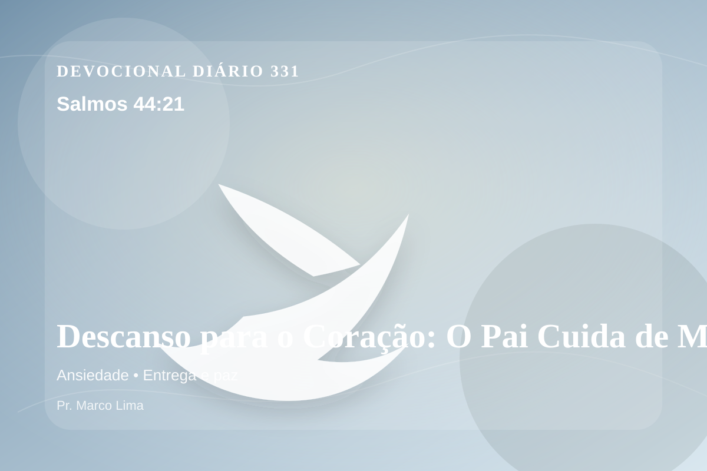

Descanso para o Coração: O Pai Cuida de Mim (Salmos 44:21)
por acaso Deus não o descobriria? Pois ele conhece os segredos do coração.
Pensamento
A mesma passagem pode tratar uma nova área do coração quando ouvimos Deus com humildade. Hoje, Salmos 44:21 não deve ser lido como uma frase isolada, mas como uma Palavra de Deus para alcançar a consciência e reorganizar a vida diante de Cristo.
Salmos 44:21 chama o coração a ouvir Deus com reverência e responder com fé prática. A Palavra não foi dada para enfeitar pensamentos religiosos, mas para conduzir pessoas reais ao Senhor.
O tema de ansiedade precisa ser recebido com simplicidade e seriedade. Esse ensino precisa descer da mente para a prática. A ansiedade tenta deslocar Deus do centro da confiança e colocar o peso da vida sobre os ombros humanos. A Escritura conduz o coração de volta à oração, à entrega e à certeza de que o Pai governa até aquilo que não conseguimos controlar.
Pergunte com honestidade: tenho obedecido a Deus nessa área ou apenas concordado com o texto? A fé bíblica não se contenta com admiração; ela se expressa em arrependimento, confiança e passos concretos.
Arrependimento não é apenas sentir peso na consciência; é voltar-se para Deus, abandonar o caminho que entristece o Senhor e confiar que a graça de Cristo é suficiente para perdoar e transformar.
Este é o evangelho que sustenta toda aplicação: Jesus Cristo morreu pelos pecadores, ressuscitou em vitória e chama cada pessoa a responder com fé, arrependimento e uma vida rendida ao Seu senhorio.
O evangelho é a resposta mais profunda para essa necessidade: Jesus morreu pelos nossos pecados, ressuscitou e chama pecadores ao arrependimento e à vida nova.
Hoje, escolha uma atitude pequena e verificável: uma oração honesta, uma conversa corrigida, um pedido de perdão, uma renúncia ou uma decisão de obedecer sem adiar.
Para Praticar Hoje
- Leia Salmos 44:21 lentamente e destaque uma palavra ou expressão central do texto.
- Confesse a Deus um pecado, resistência ou frieza espiritual que esta Palavra revelou.
- Declare sua fé em Jesus Cristo e pratique hoje uma atitude concreta de arrependimento e obediência.
Oração
Pai, onde a ansiedade aperta, lembra-me que Tu estás perto. Salmos 44:21 me ensina a entregar o que me preocupa em Tuas mãos, porque Tu cuidas de mim mais do que eu cuido de mim mesmo. Acalma meu coração e me dá a Tua paz. Faz essa verdade criar raízes em mim.
{kind=link}